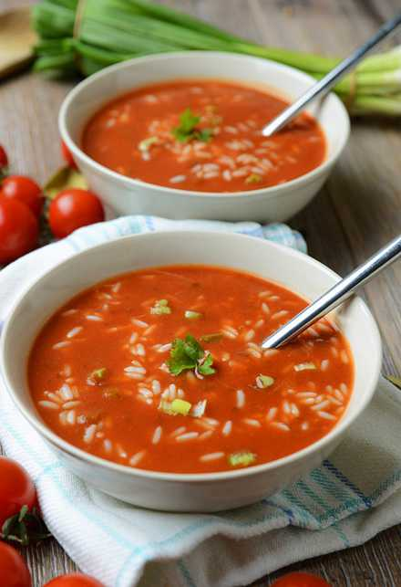

Przepis na zupę pomidorową
SKŁADNIKI:
- Rosół drobiowy winiary (2 kostki)
- Koncentrat pomidorowy (3 łyżki)
- Masło (1 łyżka)
- Marchewka duża (1 sztuka)
- Mąka pszenna (1 łyżka)
- Śmietana 18% (100ml)
- Posiekana natka pietruszki (1 łyżka)
- Ryż (1 worek)
- Sól (do smaku)
- Pieprz (do smaku)
PRZYGOTOWANIE:
- Rosół przygotuj wg przepisu na opakowaniu
- Ryż ugotuj wg przepisu na opakowaniu i ostudź
- Marchewkę obierz i zetrzyj na tarce o grubych oczkach lub pokrój w paski
- Koncentrat pomidorowy przesmaż na łyżce masła. Podlej rosołem. Dodaj marchewkę. zagotuj
- Śmietanę połącz dokładnie z mąką, rozprowadź z 100ml gorącego wywaru i dodaj do zupy, zagotuj. Dopraw do smaku solą i pieprzem
- Podaj z ryżem i natką pietruszki. Wedle uznania zrób kleks śmietany lub jogurtu
| Kalorie | 170 kcal |
|---|---|
| Węglowodany | 37 g |
| Białka | 4 g |
| Waga | 240 g |
| Tłuszcze | 1 g |
| Błonnik | 3 g |
Więcej przepisów znajdziesz na:
Winiary